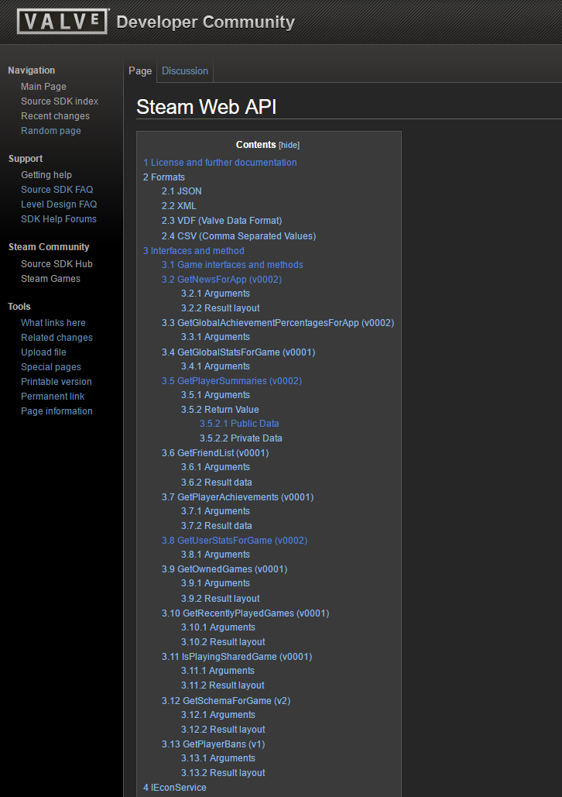

How-To Guide for the Steam Web API 
Contents
- What is an API?
- Steam Web API
- Steam Web API Key
- Obtaining a Steam Web API Key
- Steam API Documentation
- HTTP Request Format
- JSON Response
- GetPlayerSummaries (v0002) Example
- Conclusion
1. What is an API?
The million dollar question: What is an API? API stands for Application Programming Interface and can be defined as a system of tools and resources that enable developers to create software applications. Here is another definition:
In computer programming, an application programming interface (API) is a set of subroutine definitions, protocols, and tools for building application software. In general terms, it's a set of clearly defined methods of communication between various software components. A good API makes it easier to develop a computer program by providing all the building blocks, which are then put together by the programmer. An API may be for a web-based system, operating system, database system, computer hardware, or software library. An API specification can take many forms, but often includes specifications for routines, data structures, object classes, variables, or remote calls.- Wikipedia
Get it now? Think of an API as a waiter in a restuarant. In a restaurant, you (the developer) are the customer with a menu of options to order from, and the kitchen is the system that executes your order. However, there must be a way to handle and send your order to the kitchen, and return the food to you. This is where the API comes into play. The API is the waiter that handles all the responses and requests between the customer and the kitchen. The customer does not need to know how the food was cooked or the ingredients in the food. The kitchen is a "black box" in that aspect. All the customer needs to understand is that orders are made through the waiters. Also don't forget to leave a good tip ;).
The API is the messenger that takes requests and tells the system what you want to do. Then it returns the response back to you.
2. Steam Web API
Steam's Web API is an HTTP based API that has the ability to access various features of Steam. The API contains both public and protected methods depending on the intended use.
The following uses are examples of when a protected method would be used:
- Retreiving a user's stats for a game
- Retreiving a user's list of played games
- Retreiving the ban statuses for given players
The Steam Web API is accessed by making HTTP/HTTPS requests to api.steampowered.com.
Here is the general format of each API request: http://api.steampowered.com/[interface]/[method]/[method_version]/
3. Steam Web API Key
Before we can begin using Steam's Web API we will need to obtain an API key. The API key is a code passed by computer programs calling an application programming interface to identify the calling program, its developer, or its user to the Web site. For Steam's Web API, the API key is generally required when attempting to pull information related to a user. For example, let's take a look at the GetPlayerSummaries API.
GetPlayerSummaries:
http://api.steampowered.com/ISteamUser/GetPlayerSummaries/v0002/?key=XXXXXXXXXXXXXXXXXXXXXXX&steamids=76561197960435530
In the URL above, there is a name value pair with 'key' as the name and 'XXXXXXXXXXXXXXXXXXXXXXX' would be replaced with the API key. This API returns the basic profile information for a list of 64-bit Steam IDs, but it requires the use of a registered API key to be used. This information is unique to the user is connected to a specific account. Because of this, it is important to keep this information private.
4. Obtaining a Steam Web API Key
Now that we know what an API key is and what it's used for, let's learn how to obtain one.
Step 1. Go to the Steam Web API Documentation page.
Step 2. Click on the hyperlinked words "by filling out this form" as shown in the image below.
Figure 1 - Steam Web API Page
Step 3. Log on to your Steam account or Create a new account.
Figure 2 - Steam Login
Step 4. Enter your domain into the text field, agree to the Terms of Use, and click the Register button.
Figure 3 - Register Web API Key
Figure 4 - Register Web API Key with Domain Name
Step 5. Save and protect your registered API key
Figure 5 - Steam Web API Key
Alright! We are one step closer to being able to use Steam's Web API
5. Steam API Documentation
The Steam API Wiki serves as a good resource for finding information on the different interfaces and methods available. There you will be able to find out the required arguments and resulting data for each method.
Figure 6 - Steam API Wiki

Taking a look at GetPlayerSummaries, we can see that there is some good information about the required arguments for the method and what information we can expect to get back. It also tells you what different values may indicate. For example, the 'personastate' will be a value between 0-6. 0 indicates that the user is offline, 1 indicates that the user is online, 2 indicates that the user is busy, etc. Knowing this, you will be able to decide and determine how you would like to implement this for your application.
Figure 7 - GetPlayerSummaries Overview
6. HTTP Request Format
Now that we've reviewed some of the API calls that can be performed. Let's put one into action! The code below you will see some AJAX code to retrieve data from a location specified by our HTTP call.
What is AJAX? AJAX stands for Asynchronous JavaScript and XML. In this code, it essentialy is our use of XMLHttpRequest(). We will use it to communicate to server-side scripts for the sending and receiving of information. Don't be fooled by the name. It doesn't only work with XML, but also JSON, HTML, and plain text files.
Back to the code. I will only explain a few things here because there will be a point I want to get to. This code will uses Document Object Model to interface with the HTML document. Once a 'click' event occurs from an element with the ID of 'steamSubmit' the rest of the code in this body will execute.
var req = new XMLHttpRequest();
In order to use the XMLHTTPRequest() object, we have to assign it to a variable. In this case, the variable is 'req'. Now it's properties are accessible.
req.open('GET', 'http://api.steampowered.com/IsteamUser/GetPlayerSummaries...', false);
This is where the actual GET request occurs. The first argument is 'GET' to indicate what kind of request it is and the second argument is the HTTP call provided from Steam.
var response = JSON.parse(req.responseText);
Now the 'req.responseText' should be filled with the JSON response, and will get parsed and assigned to 'var response'.
Now for the gotcha...this doesn't actually work. Scroll down and see why...
function bindButtons(){
document.getElementById('steamSubmit').addEventListener('click', function(event){
var req = new XMLHttpRequest();
var payload = {steamId:null};
payload.steamId = document.getElementById('steamId').value;
req.open('GET', 'http://api.steampowered.com/ISteamUser/GetPlayerSummaries/v0002/?key=' + apiKey + '&steamids=' + payload.steamId, true);
//req.setRequestHeader('Content-Type', 'application/json');
req.send(null);
req.addEventListener('load',function(){
if(req.status >= 200 && req.status < 400){
var response = JSON.parse(req.responseText);
console.log(JSON.parse(req.responseText));
document.getElementById('gamerTag').textContent = response.players[0].personaname;
document.getElementById('status').textContent = response.players[0].personastate;
document.getElementById('country').textContent = response.players[0].loccountrycode;
}else{
console.log("Error in network request: " + req.statusText);
}});
event.preventDefault();
})
}
If you tried to run this code, you would run into a problem regarding HTTP access control also known as CORS. CORS stands for Cross-Origin Resource Sharing and and allows web servers to perform secure cross-domain data transfers. The Access-Control-Allow-Origin header will specify certain domains that are allowed to perform cross-domain data transfers. In this case, Access-Control-Allow-Orgin is set to null. Therefore, data transfers between domains cannot be performed. You can see the result of the execution of this code by pressing the submit button below and viewing your browser console or viewing Figure 8.
Steam HTTP Request Results
Gamer Tag:Status:
Country:
Figure 8 - Access-Control-Allow-Origin
Alright, ready to use some code that actually works?
This code utilizes node.js to execute some event driven I/O. Now because this code will be executed by the server, it will act as the "client" and be able to access the resources from other servers.
So the first few lines of code set up the node packages for use by assigning them to variables, but the main part of this code is the app.get(). For this specific instance, the app.get() will be executed when the base domain name of the website is called, and it is indicated this by the '/'. If http://steamApi.com/ was the domain of that site and was called, the app.get() would be called. Next, a funciton call with three arguments (req, res, next) is called and within that body is the request() call.
request('http://api.steampowered.com/ISteamUser/GetPlayerSummaries...', function(err, response, body){some code});
Once this called the HTTP request is performed and obtains a response that is passed again to the next function call. If the status code in the response is less than 400, than store the body (JSON object). Otherwise there is an error that occured and a 404, 500, or some other error code was received.
var express = require('express');
var app = express();
var handlebars = require('express-handlebars').create({defaultLayout:'main'});
var credentials = require('./credentials.js');
var request = require('request');
app.engine('handlebars', handlebars.engine);
app.set('view engine', 'handlebars');
app.set('port', 3000);
app.use(express.static('public'));
app.get('/',function(req,res,next){
var context = {};
request('https://api.steampowered.com/ISteamUser/GetPlayerSummaries/v0002/?key=' + credentials.key + '&steamids=76561197991209043', function(err, response, body){
if(!err && response.statusCode < 400){
context.stm = body;
res.render('home',context);
} else {
console.log(err);
if(response){
console.log(response.statusCode);
}
next(err);
}
});
});
app.use(function(req,res){
res.status(404);
res.render('404');
});
app.use(function(err, req, res, next){
console.error(err.stack);
res.status(500);
res.render('500');
});
So we looked at one method of performing an HTTP request from Steam's API, but what now you ask? Now we can parse the data and actually use the JSON response.
7. JSON Response
So what is JSON?
"JSON or JavaScript Object Notation is a lightweight data-interchange format. It is easy for humans to read and write, easy for machines to parse and generate." - json.org
Once the received JSON has been parsed it becomes a collection of name/value pairs and can be accessed once it is assigned to a variable. The JSON response below is what is returned by the GetPlayerSummaries API call. You can see that "response" is the primary object that has a value of "players". However, "players" is an array of even more name/value pairs that is able to be accessed. Now that we've seen what the API will return, let's go put it to use.
{
"response": {
"players": [
{
"steamid": "76561197991209043",
"communityvisibilitystate": 3,
"profilestate": 1,
"personaname": "Arubāto",
"lastlogoff": 1488259851,
"profileurl": "http://steamcommunity.com/id/arubato-san/",
"avatar": "https://steamcdn-a.akamaihd.net/steamcommunity/public/images/avatars/b0/b06db26b73c9c9a540c025a1289e3190b4118fba.jpg",
"avatarmedium": "https://steamcdn-a.akamaihd.net/steamcommunity/public/images/avatars/b0/b06db26b73c9c9a540c025a1289e3190b4118fba_medium.jpg",
"avatarfull": "https://steamcdn-a.akamaihd.net/steamcommunity/public/images/avatars/b0/b06db26b73c9c9a540c025a1289e3190b4118fba_full.jpg",
"personastate": 0,
"primaryclanid": "103582791431177624",
"timecreated": 1184589320,
"personastateflags": 0,
"loccountrycode": "US"
}
]
}
}
8. GetPlayerSummaries (v0002) Example
Below is an example of putting the JSON response to use. Here 5 of the 14 pieces of information from the JSON response are being used: personaname, profileurl, avatarmedium, personastate, and loccountrycode. Let's explain the code a bit...
Steam Profile
HTML:
<center>
<div>
<h5>Steam Profile</h5>
<span id="gamerTag"></span><br />
<span id="status"></span><br />
<img id="avatar" src=""><br />
<span id="profileUrl"></span><br />
<span id="location"></span>
</div>
</center>
As you can see this is just some simple HTML using the spans tag and image tag with individual ids to place the information we will pass via JavaScript.
For example, the json.js file which we will explain in a little bit will call document.getElementById('gamerTag').innerHTML = someValue; and find where it is going to place the value by id. In this case it will be in <span id="gamerTag"></span>.
JavaScript:
window.onload = function(){
var steamProfile = {
"response": {
"players": [{
"steamid": "76561197991209043",
"communityvisibilitystate": 3,
"profilestate": 1,
"personaname": "Arubāto",
"lastlogoff": 1488259851,
"profileurl": "http://steamcommunity.com/id/arubato-san/",
"avatar": "https://steamcdn-a.akamaihd.net/steamcommunity/public/images/avatars/b0/b06db26b73c9c9a540c025a1289e3190b4118fba.jpg",
"avatarmedium": "https://steamcdn-a.akamaihd.net/steamcommunity/public/images/avatars/b0/b06db26b73c9c9a540c025a1289e3190b4118fba_medium.jpg",
"avatarfull": "https://steamcdn-a.akamaihd.net/steamcommunity/public/images/avatars/b0/b06db26b73c9c9a540c025a1289e3190b4118fba_full.jpg",
"personastate": 0,
"primaryclanid": "103582791431177624",
"timecreated": 1184589320,
"personastateflags": 0,
"loccountrycode": "US"
}]
}
}
var gamerTag = steamProfile.response.players[0].personaname; // assigns JSON property, personaname, to personaName
console.log(gamerTag); // displays "Arubāto" to console
document.getElementById('gamerTag').innerHTML = gamerTag; //sends gamerTag to html
var status = ["Offline", "Online", "Busy", "Away", "Looking to trade", "Looking to play"];
var num = steamProfile.response.players[0].personastate; //assigns JSON property, personastate, to status
console.log(num + ' = ' + status[num]); // displays status to console
document.getElementById('status').innerHTML = status[num]; //sends status to html
var avatar = steamProfile.response.players[0].avatarmedium; // assigns JSON property, avatarmedium, to avatar
console.log(avatar); // displays the image source to console
document.getElementById('avatar').src = avatar; //sends avatar image source to html
var profileUrl = steamProfile.response.players[0].profileurl; // assigns JSON property, profileurl, to personaName
console.log(profileUrl); // displays "http://steamcommunity.com/id/arubato-san/" to console
document.getElementById('profileUrl').innerHTML = profileUrl;//sends profileUrl to html
var country = steamProfile.response.players[0].loccountrycode; // assigns JSON property, loccountrycode, to personaName
console.log(country); // displays "US" to console
document.getElementById('location').innerHTML = country; //sends country to html
}
Okay, above is the JavaScript code that uses the JSON response, pulls desired information, and sends it to the HTML page. So let's break it down.
window.onload = function(){}
This assigns a function call and the code within it will be executed upon the loading of the window
var steamProfile = {JSON Object};
In order to access the JSON Object, it is assigned to a variable 'steamProfile'. However, it is still not entirely useful. We want to access specific elements not just the JSON object as a whole.
var num = steamProfile.response.players[0].personastate;
Now we're getting somewhere. Here we are able to access the specific element 'personastate' and assign it to another variable 'num' which we will use in just a sec. Before I do that, i'd like to explain further how to access this object. As you can see the variable we are accessing is 'steamProfile'. Then we use the dot ('.') notation to access 'response'. Once we get to 'players' we will use brackets ([ ]) to access a specific element like so, 'players[0]'. You may ask why we are calling '[0]', the first element in the array. Well if you look close enough 'players' only contains one element which is in turn our list of name/value pairs. Attempting to call 'steamProfile.response.players[10]' to access the 'personastate' would cause an error. Finally, we can now call the specific item in the element and obtain it's value.
console.log(num + ' = ' + status[num]);
This is just a simple console.log call to help illustrate the ability to extract information from a JSON object. If you open up the developer tools for your specific browser and view the console, you should see 0 = Offline logged.
document.getElementById('status').innerHTML = status[num];
The last step in this code is to take the newly obtained values and send it to the HTML page to be displayed. Here we use the HTML DOM getElementByID() method. This will return the assigned value to the element that has the ID of 'status' and will send it as HTML content with the .innerHTML property.
var status = ["Offline", "Online", "Busy", "Away", "Looking to trade", "Looking to play"];
You may have noticed that the value that was assigned was 'status[num]', but the value obtained from the JSON object was assigned to 'num' itself. Being the good Web Developer I am, I read the documentation for this specific API call and learned that each integer value has a specific meaning. So I created an array of strings with each string placed in the position equal to it's defined integer value, and the value of num will determine which string to display.
9. Conclusion
And that is all there is too it...
We have gone over the basics of APIs, JSON, AJAX, Steam's API Documentation and requirements, and even some methods for use. Now you have the basic tools necessary to build some awesome applications. Good luck!